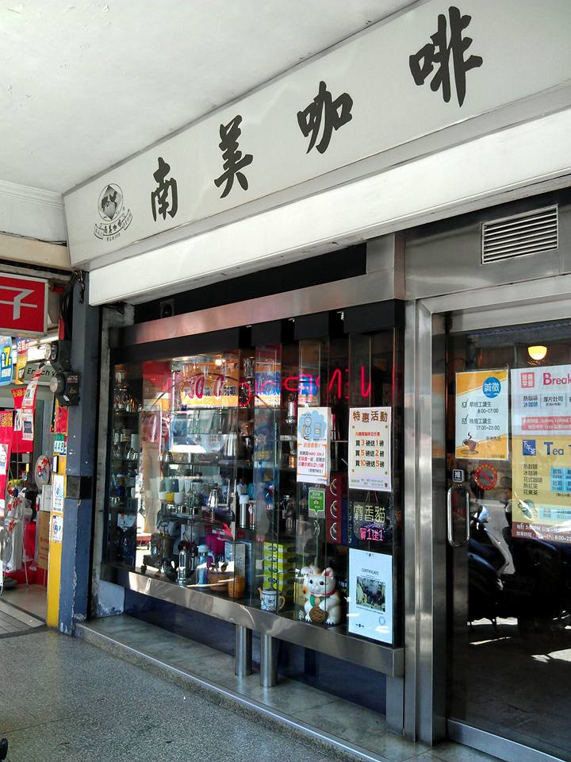
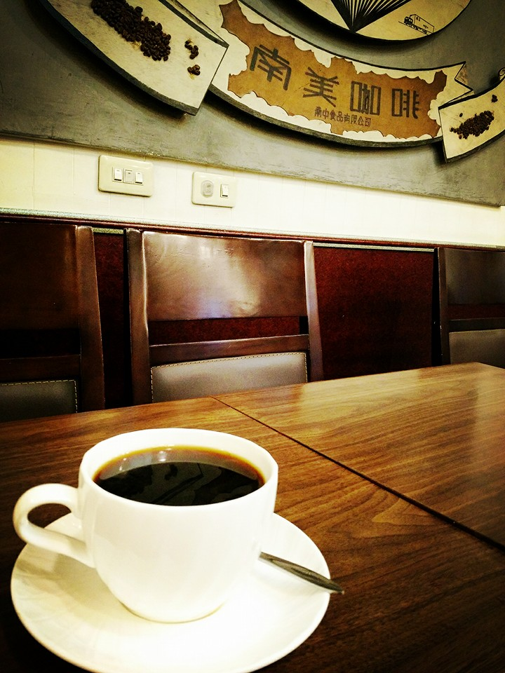
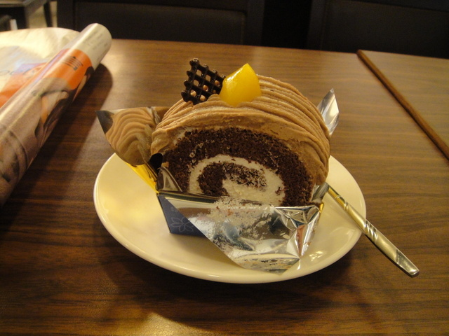

>
>
士林，有家好喝的手作咖啡就隱身在文林路上，老士林人想解咖啡癮，不是去星巴克也不是咖啡弄，而是到南美咖啡來。
沒有名氣的招牌，華麗的裝潢，這樣的小店有點像賣雜貨的，走過真的很容易忽視它。
除了咖啡及土司、三明治、鬆餅、蛋糕等輕食外，這裡也販售自家烘焙的咖啡豆與咖啡機、手沖壺、咖啡杯等相關器具，平日的下午茶時段還能續一杯咖啡，來這消磨時間很划算的，好吃的早餐組更是不要錯過。
我常來這點杯曼特寧，看著咖啡師傅手工現煮咖啡，南美的顧客大多是老客人，年齡層比較大一些，但大家都很肯為這手工美味等上一時半刻，觀賞著忙碌的虹吸壺表演，其實慢慢來也好，我喜歡一杯用心煮出來的咖啡。
在充滿咖啡香的環境等待咖啡很幸福，寧靜的下午我等著我的曼特寧送上桌來，輕啜一口單純的黑咖啡，很香，微苦不酸澀，搭配我最愛的栗子蛋糕，享受一個人的美好時光。
幾乎每天都會經過這家南美咖啡，走過這家店都會聞到濃濃的咖啡香，很吸引人，我都會放慢腳步，享受一下咖啡的香氣。